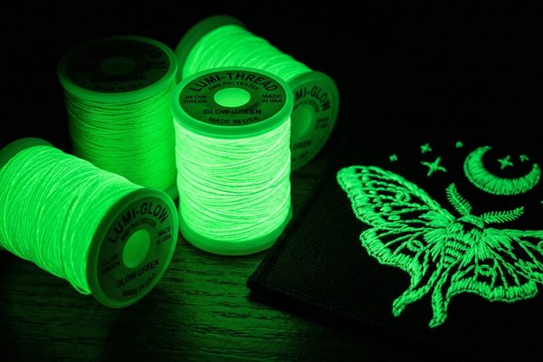

Glow-in-the-Dark Patches: Safety, Night Visibility & Tactical Uses
Discover how custom glow-in-the-dark patches combine visual appeal with life-saving night visibility. Learn about phosphorescent embroidery threads, glow-in-the-dark PVC rubber pigments, charging times, glow longevity, and tactical applications.

1. How Glow-in-the-Dark Patches Work: The Science of Photoluminescence
Custom glow-in-the-dark patches represent one of the most functional specialty patch products manufactured today. Unlike reflective patches that require an external direct light beam to bounce light back to an observer, glow-in-the-dark patches emit their own self-sustaining luminescent glow in total darkness.
This optical effect is powered by persistent photoluminescence. Microscopic rare-earth aluminate phosphor crystals are embedded directly into polyester embroidery threads or liquid PVC rubber compounds. When exposed to photons from ambient sunlight, UV torches, or indoor fluorescent lights, these phosphors absorb and store radiant energy. As darkness falls, the stored energy is slowly released over several hours in the form of visible green, aqua, or blue light.

2. Embroidered vs. PVC Glow Patches: Technical Comparison
When engineering custom glow patches at ChinaPatchFactory, clients primarily choose between two manufacturing methods: Embroidered Thread Patches and Soft Molded PVC Rubber Patches. Each style offers unique tactile qualities and performance benefits:
Phosphorescent Embroidered Patches
Embroidered glow patches utilize specialized 40-weight polyester thread spun with strontium aluminate phosphors. During daytime lighting, the glow thread displays an off-white or pale cream appearance. In total darkness, it glows with a luminous emerald green or ice blue hue. Embroidered glow patches offer classic textile texture and flexible sew-on application for jackets, uniforms, and headwear.
Luminescent PVC Rubber Patches
PVC glow patches blend photo-luminescent powder directly into liquid polyvinyl chloride before heat curing in precision metal molds. Because the phosphor particles are thoroughly suspended throughout the solid rubber substrate, PVC patches achieve exceptionally high glow intensity and are 100% waterproof, mud-resistant, and impervious to weather degradation.
3. Glow Patch Material & Performance Matrix
The table below summarizes key specifications and glow performance characteristics across different custom patch types:
| Patch Type | Glow Duration | Daytime Color | Weather Resistance | Best Use Case |
|---|---|---|---|---|
| Custom Glow Embroidery | 4 to 6 Hours | Off-White / Pale Tint | Machine Washable | Apparel, Caps, Uniforms, Patches |
| Custom 3D Glow PVC | 6 to 10 Hours | Translucent / Tinted | 100% Waterproof & UV-Proof | Tactical Vests, Backpacks, Marine Gear |
| Glow Woven Patches | 3 to 5 Hours | Fine Off-White Yarn | High Wash Durability | Small Lettering, Detailed Logos |
| Hybrid Glow + Reflective | Dual Visibility | Silver-Grey / Neon | Industrial Grade | EMS, Firefighters, Road Workers |
4. Top Real-World Applications: Tactical, Safety & Lifestyle
Glow-in-the-dark patches serve critical functional roles across diverse industries and lifestyle communities:
- Tactical & Military Morale Patches: Unit insignia, callsign badges, and medical blood-type patches (e.g., A POS, O NEG) engineered with Hook-and-Loop Velcro backings allow squad members to maintain passive visual identification during nighttime search-and-rescue or low-light tactical operations.
- Industrial Safety & Emergency Services: First responders, mining crews, construction personnel, and roadside emergency technicians rely on glow patches to ensure immediate personnel visibility if primary power fails.
- Outdoor Adventure & Camping Gear: Glow patches sewn onto hiking backpacks, tent zipper pulls, and canine harness vests make finding gear and tracking pets effortless in wilderness campsites.
- Streetwear & Nightlife Fashion: Urban apparel brands incorporate glowing logos, cyber-themed emblems, and glow-in-the-dark varsity lettering to create striking visual appeal in nightclub and festival environments.
5. Glow Colors, Charging Methods & Longevity
Not all glow pigments perform identically. Understanding how color selection and light exposure affect performance ensures optimal results for your custom patch project:
Glow Color Spectrum
- Luminous Green (520nm): The brightest and longest-lasting photoluminescent hue. The human eye is naturally most sensitive to green wavelengths in low-light scotopic vision.
- Aqua Cyan (490nm): A crisp, modern ice-blue glow favored by tactical teams and streetwear brands. Delivers excellent brightness and sleek modern aesthetics.
- Cobalt Blue & Violet: Deeper, atmospheric glow colors ideal for novelty items, artistic patches, and collectible merchandise.
Optimal Charging Methods
Phosphorescent materials require exposure to light containing UV or blue wavelengths for maximum energy absorption. Just 3 to 5 minutes of direct natural sunlight or 60 seconds under a UV blacklight torch will fully charge the patch to peak brightness. Standard indoor ambient room lighting will also charge the patch within 15 to 30 minutes.
Pro Tip: Contrast Maximization
For maximum legibility in the dark, contrast glowing elements against solid black or dark charcoal backing twill. High background contrast makes glowing text and line art appear significantly brighter.
6. Custom Glow Patch Pre-Flight Design Checklist
Review this 6-point checklist before finalizing your glow patch artwork with our engineering team:
- ✔️ Specify Glowing Elements: Clearly designate which layers, borders, or text elements should use glow material vs standard colored threads.
- ✔️ Check Daytime Appearance: Remember that glow thread and PVC appear pale cream/off-white in normal daylight.
- ✔️ Ensure Minimum Stroke Width: Keep glowing text lines at least 1.0mm thick for embroidery and 0.8mm for PVC molding to ensure adequate phosphor volume.
- ✔️ Choose Appropriate Backing: Select Hook-and-Loop Velcro for tactical vests, Heat-Seal Iron-on for garments, or Peel-and-Stick Adhesive for temporary gear.
- ✔️ Inspect 12-Hour Digital Proof: Review our digitized proof simulations showing both daytime look and nighttime glow simulation before approving production.
- ✔️ Verify Safety Certifications: Confirm all phosphorescent pigments are non-toxic, non-radioactive, and compliant with RoHS and OEKO-TEX Standard 100.
Frequently Asked Questions (FAQ)
Q1: Are glow-in-the-dark patches safe and non-toxic?
Yes, 100%! All glow-in-the-dark patches manufactured at ChinaPatchFactory use modern, non-toxic strontium aluminate phosphors. They contain zero radioactive substances, zero heavy metals, and comply fully with international safety and environmental regulations.
Q2: How many times can a glow-in-the-dark patch be recharged?
Glow-in-the-dark phosphors can be recharged indefinitely! The photoluminescent reaction is a physical light-absorption process that does not degrade or deplete over time. Your patch will continue glowing reliably for 10+ years of daily use.
Q3: Can I wash embroidered glow-in-the-dark patches in a washing machine?
Yes. Our phosphorescent polyester threads are colorfast and machine washable in warm water. Avoid harsh bleach or industrial dry cleaning solvents to preserve optimal thread luster and long-term glow performance.
Q4: What is the minimum order quantity (MOQ) for custom glow patches?
At ChinaPatchFactory, we have no minimum order quantity (MOQ). You can order a single custom prototype proof or mass production runs of 10,000+ pieces at factory-direct wholesale pricing.
Q5: Can I combine glow threads with standard colored threads in the same design?
Absolutely! Most custom designs combine standard colored embroidery threads with selective glow threads on key focal points (such as eyes, logos, or critical text) to create striking contrast both during the day and in the dark.
Conclusion & Wholesale Ordering Guide
Whether you require life-saving night identification for emergency responders, tactical morale badges for military units, or eye-catching branded apparel patches, custom glow-in-the-dark patches provide unmatched utility and visual impact.
At ChinaPatchFactory, our master digitizers and modern manufacturing facilities produce premium glow-in-the-dark embroidered, woven, and PVC patches with rapid 12-hour digital proofing and guaranteed on-time delivery.
Ready to Order Custom Glow-in-the-Dark Patches?
Send us your logo artwork or design concepts today. Receive a free digital proof and competitive factory wholesale quote within 12 hours with no MOQ required!
Get Free Quote